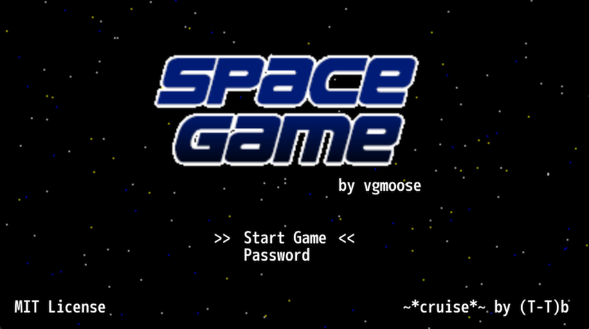
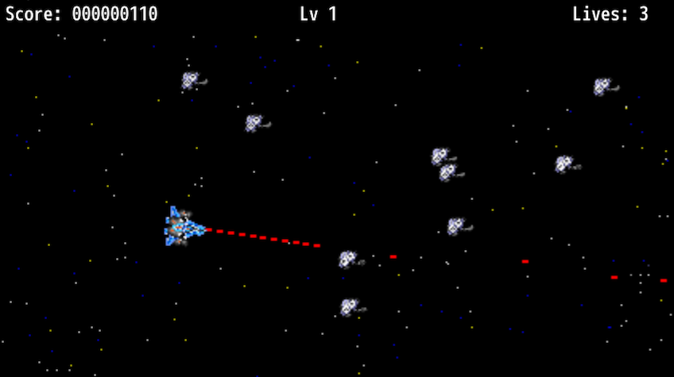

Space Game was originally a Wii U homebrew released in 2016 that was my first real designed-for-consoles app/game.
This new version is playable in a browser at vgmoose.com/space-game/, or can be downloaded for Linux/Mac/Windows from these pipelines. I actually wasn't intending to make a web version, but adding in these Godot Github Actions included a gh-pages/Github Pages deploy, and I am happy with the results!
 
I ported this game to Java in 2017, and again to SDL in 2018. The Java port was a lot more "creative" than the SDL port, and this Godot port I would classify along those same lines. To compare the different versions:
| Game | Language | Drawing code |
|---|---|---|
| Space Game (Wii U) | C | draw.c |
| JSpaceGame | Java | Draw.java |
| Space Game NX | C (SDL) | draw.c |
| Space Game (2021) | GDScript | draw.gd |
The Java/GDScript ports basically take the C code and via find/replace and going line by line translate some of the syntax differences and concepts. The new readme goes into more detail on some of the substitutions that had to be made. This is not a good example of how to make a 2D Godot game! However, it is faithful to the original math and behavior of the game.
Entering the code 11111 on the Password screen toggles between UI changes that were made in Space Game NX (primarily the font) to allow this version to be the more "definitive" game. My primary drive for porting this yet again is to make it more accessible. Very often when I talk about having made this game, the person I am talking to is unable to play it due to the nicheness of homebrew scenes.